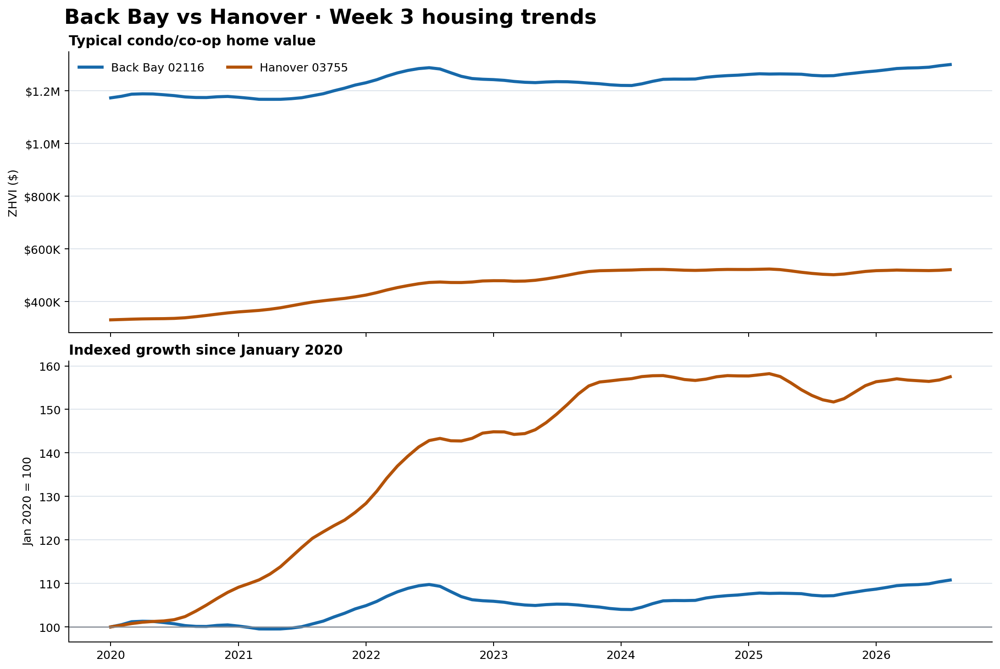

Week 3 · East region · Seed 3 vs Seed 14 · Final research
Back Bay vs Hanover
Both cities use 80 monthly condo/co-op ZHVI observations from January 2020 through August 2026. Five candidates are evaluated independently across 44 expanding-window, one-month-ahead backtests; the lowest-MAE model earns each September 2026 forecast.
BB
Back Bay, MA
East seed 3 · ZIP 02116
$1,300,581September 2026 forecast
+0.12% vs August
VSsame protocol
HAN
Hanover, NH
East seed 14 · ZIP 03755
$521,201September 2026 forecast
+0.00% vs August
Back Bay wins on forecast price. Hanover leads longer-run growth since January 2020.
Forecasting box score
| Measure | Back Bay | Hanover |
|---|---|---|
| Months analyzed | 80 (Jan 2020–Aug 2026) | 80 (Jan 2020–Aug 2026) |
| Latest typical condo value | $1,298,982 · Aug 2026 | $521,201 · Aug 2026 |
| Historical average | $1,232,571 | $459,361 |
| Historical high | $1,298,982 · Aug 2026 | $523,568 · Mar 2025 |
| Historical low | $1,167,104 · Apr 2021 | $330,919 · Jan 2020 |
| Year-over-year change | +3.40% | +3.48% |
| Growth since Jan 2020 | +10.77% | +57.50% |
| Selected model | Drift | Last value baseline |
| Next-month forecast | $1,300,581 · +0.12% | $521,201 · +0.00% |
| 80% prediction range | $1,296,033–$1,304,711 | $519,110–$526,464 |
| Rolling forecast error | MAE $2,833 · baseline $2,898 | MAE $2,312 · baseline $2,312 |
Week 3 housing trends

Data QA
Rows per city80 / 80
Missing values0 / 0
Duplicate dates0 / 0
Missing months0 / 0
Nonpositive values0 / 0
QA statusPASS / PASS
Method. Candidate models are last value, 12-month seasonal naive, drift, 36-month linear trend, and Holt damped trend. Each is evaluated over 44 chronological expanding-window, one-month-ahead forecasts. Selection uses the lowest MAE. The empirical 80% range is derived from each selected model’s rolling residuals. The matchup winner is the higher next-month forecast value; model error and growth are reported separately.
Source note. The attached files are treated as the manually captured Zillow Home Value Index condo/co-op series specified for Back Bay ZIP 02116 and Hanover ZIP 03755. Zillow’s public page headlines are all-home values and are not substituted for these condo series. This research preview is not an appraisal or investment recommendation.
Source note. The attached files are treated as the manually captured Zillow Home Value Index condo/co-op series specified for Back Bay ZIP 02116 and Hanover ZIP 03755. Zillow’s public page headlines are all-home values and are not substituted for these condo series. This research preview is not an appraisal or investment recommendation.